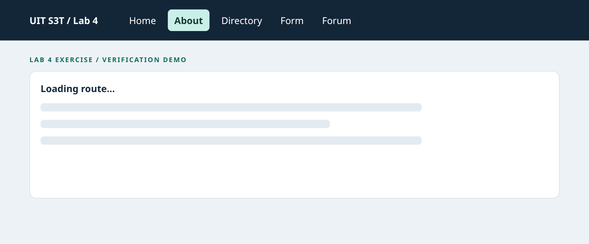
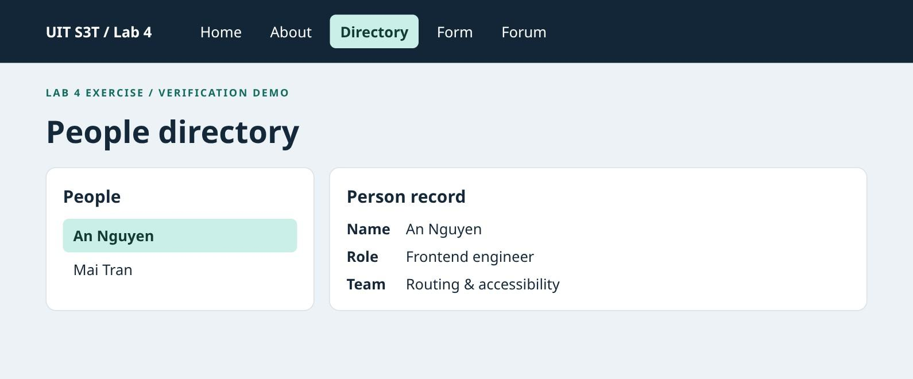
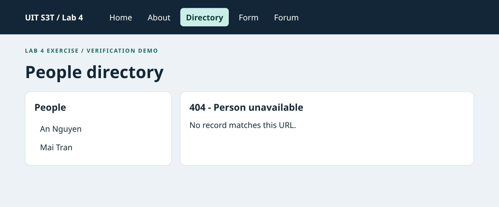
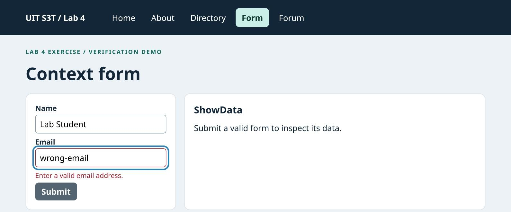
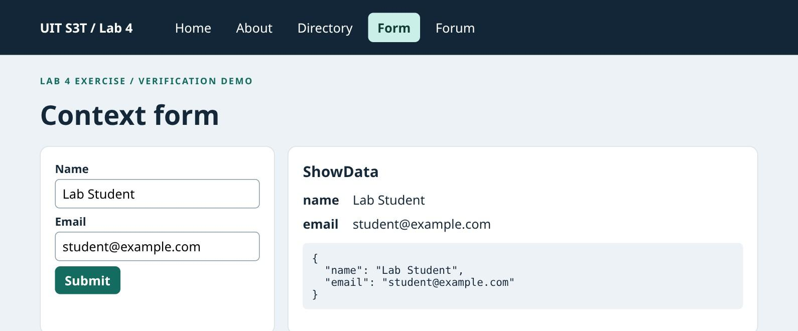
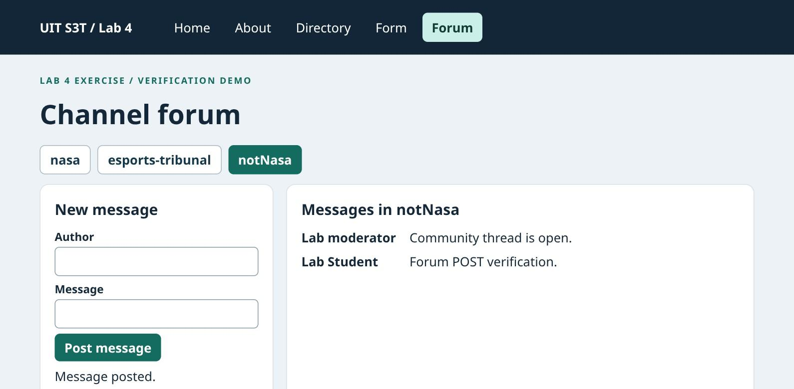

Lab_04/Exercise/)Build and verify a multi-route React 19 application that loads views on demand, derives accessible form validation during render, and retrieves and submits forum messages through an Express REST API.
The attached README describes the intended project structure and test suites. The submitted attachments contained documentation and the lecture deck. The screenshots and runtime results in this report come from a locally reconstructed verification demo based on those materials. The original project and its test suites remain unverified.
Route components are loaded with React.lazy. A Suspense boundary supplies a skeleton with aria-busy="true" and aria-live="polite". The Vite production build emitted separate JavaScript chunks for Home, About, People, Person, Form and Forum. The browser check delayed the About chunk until the skeleton was visible, then released it and confirmed that About rendered. Cumulative Layout Shift was outside this check.

React Router v7 declares routes with Routes and JSX element props. The shared layout renders child routes through Outlet. The NavLink callback uses isActive for active styling. Browser checks confirmed the active About link and the selected directory record.

/people/an route highlights An Nguyen and displays the matching person record.The directory uses a responsive CSS grid, with a nested detail route that resolves the ID through useParams(). The detail view uses dl, dt and dd for field names and values. A direct visit to an unknown ID keeps the directory visible and renders an in-app 404 state.

/people/missing displays the missing-person state.Context supplies the field values and validation state. Validation runs during render, which removes the need for effects that synchronize errors and form validity. Each field calls useId() and links its error to the input through aria-describedby. The browser check confirmed distinct field IDs and the change in aria-invalid when the email was corrected.

A successful submit stores a snapshot of the values. ShowData renders the submitted values as a definition list and formatted JSON.

ShowData.The demo follows the README and server contract for /api/messages/:forum. The hook aborts the previous GET on channel change and guards result updates with signal.aborted. Express validates author and message text, generates a UUID for accepted posts, and applies CORS for the client origin. The demo stores messages in memory for the duration of the run.

| Request | Result |
|---|---|
GET /api/messages/nasa | net::ERR_ABORTED (Chromium) |
GET /api/messages/esports-tribunal | net::ERR_ABORTED (Chromium) |
GET /api/messages/notNasa | 200 |
POST /api/messages/notNasa | 201 |
GET /api/messages/notNasa | 200 |
POST /api/messages/notNasa | 400 (blank text, direct API request) |
Rapid switching with an 850 ms API delay canceled two in-flight GET requests. The final channel loaded and displayed the posted message. A direct request with blank text returned HTTP 400 and included the configured CORS origin header. Chromium reported zero console warnings or page errors during the browser check.
The project rules specify a contract-first test cycle and atomic commits. The task decomposition maps those steps to the three sprints. The supplied AI audit documents conflicting endpoint examples and a shared field ID in the slides. The demo uses one canonical endpoint and gives every input its own ID.
Source materials. UIT S3T Lab 4 lecture deck, README, project rules, task decomposition and AI failure audit.